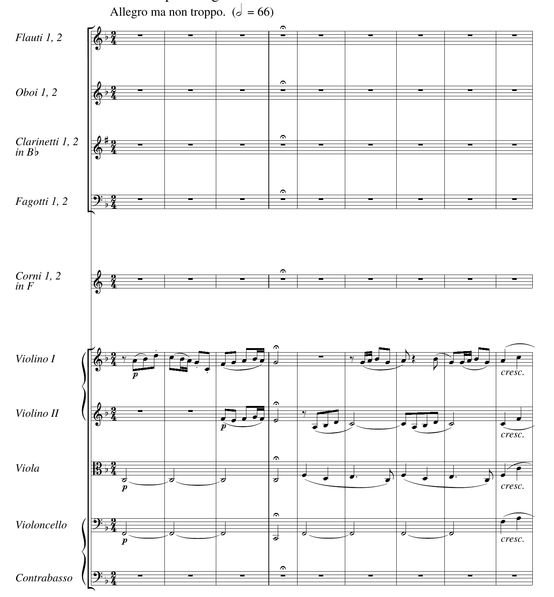
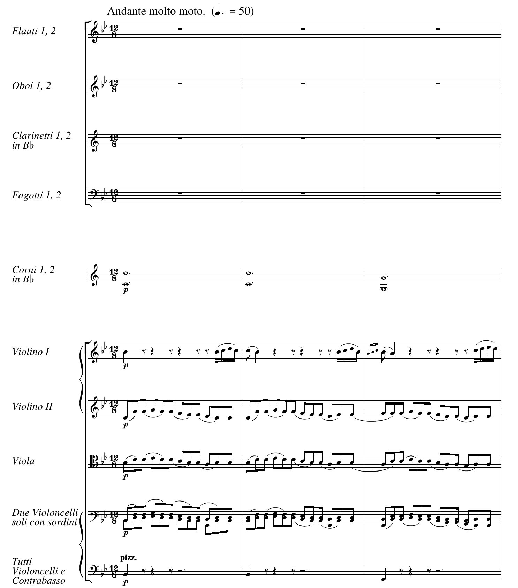
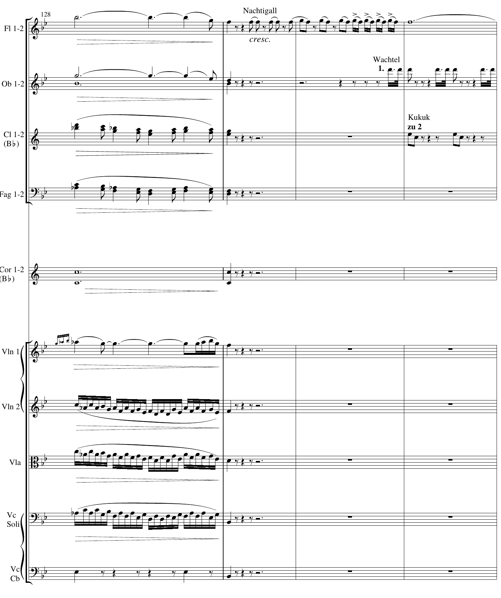
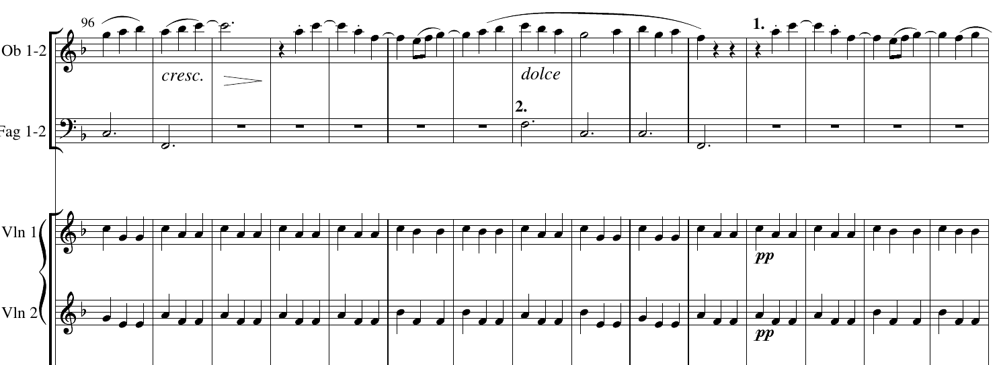
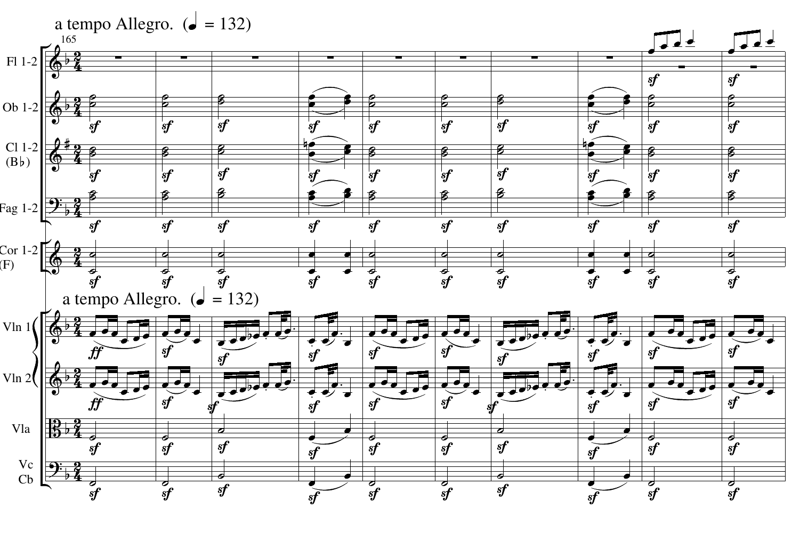
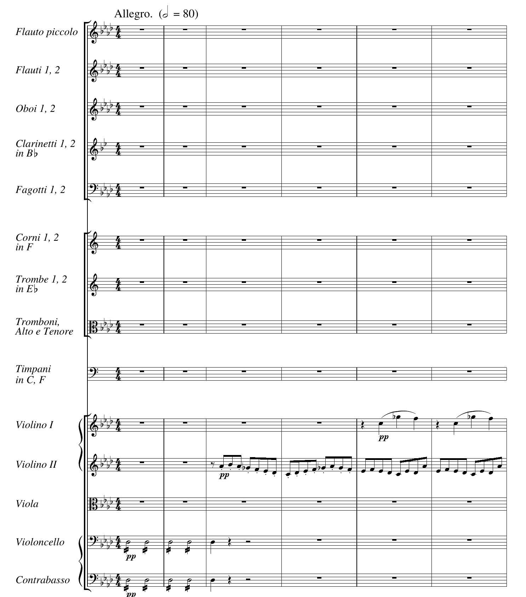
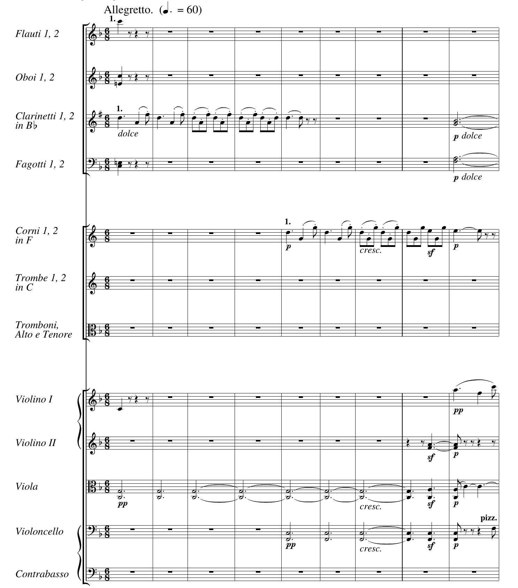

Introduction
Beethoven headed the score with a warning: the work is "more an expression of feeling than painting." The titles are invitations to a mood, not a script. He is not trying to imitate the countryside note for note. He wants you to feel what it is like to walk out of the city and let your shoulders drop.
Three things make this symphony different from his others, and they are worth carrying into every movement:
- Patience. Short musical cells repeat many times over slowly shifting harmony. Where his Fifth drives forward, the Sixth lets things sit.
- Five movements, not four. The country dance, the storm and the closing hymn run together without a break.
- Nature in the orchestra. There are named bird calls in the second movement. The storm brings in the piccolo and timpani, heard nowhere else in the symphony, plus trombones, which return only in the finale.
The sound
The core of the orchestra is the standard Beethoven band: strings, plus pairs of flutes, oboes, clarinets, bassoons and horns. The difference is what he holds back. Trumpets stay silent until the third movement, and the timpani, piccolo and two trombones wait until the storm. The piccolo and timpani are heard only there, and the trombones stay on through the finale. When they arrive, they hit hard because you have not heard them for half an hour.
1. Awakening of cheerful feelings on arriving in the country
Listening map
- OPENING A gentle first theme in the violins, built from a tiny cell that is repeated and nudged up and down.
- EXPOSITION The second theme arrives in C major, in the same easy mood. Nothing here argues.
- DEVELOPMENT The cell is repeated over and over while the harmony slowly shifts underneath. This is the stretch people call "hypnotic."
- RECAP & CODA The themes return in F major and the movement ends quietly rather than with a flourish.

img/m1-theme.png.What to listen for
Notice what Beethoven does not do. In the middle of the movement a single idea is repeated for long stretches and the music still feels like it is moving, because the colors and harmonies slide beneath it the way light shifts on a hillside.
↑ Back to top2. Scene by the brook
Listening map
- BROOK The strings murmur in a gentle 12/8 rocking figure. Two solo cellos play with mutes (marked soli con sordini) while the other cellos and basses pluck below. The water never stops.
- MELODIES Long, singing themes float over the murmur.
- CODA The orchestra thins out and the birds appear. Beethoven labels them in the score: Nachtigall (nightingale, flute), Wachtel (quail, oboe) and Kuckuck (cuckoo, clarinets).

img/m2-brook.png.
img/m2-birds.png.3. Merry gathering of country folk
Listening map
- SCHERZO A bouncy 3/4 dance that starts almost under its breath, then grows.
- VILLAGE BAND A joke inside the scherzo. The oboe's tune keeps missing the downbeat, and the bassoon seems to know only two notes.
- TRIO The meter switches to 2/4 and the dancers stamp. Loud sf accents land on the first beat of almost every bar.
- RETURNS The pattern runs scherzo, trio, scherzo, trio, then a cut-short scherzo. The dance breaks off as the first thunder arrives.

img/m3-band.png.
img/m3-trio.png.4. Thunder, storm
Listening map
- FIRST DROPS Cellos and basses rumble first, then the second violins start to patter.
- BREAKING Timpani and the full orchestra crash in. The piccolo and timpani play nowhere else in the symphony, and the trombones join here for the first time.
- CLEARING The storm drains away into the low strings, and a rising flute scale points toward the light and leads straight into the finale.

img/m4-storm.png.5. Shepherds' song: happy, thankful feelings after the storm
Listening map
- CALL A solo clarinet, then a horn, play a pipe-like shepherd's call.
- HYMN The strings answer with the main tune, a warm, grateful song that returns between episodes.
- CODA The song fades to a hush, with a muted horn (con sordino) floating above shimmering strings, and then two sudden ff chords end the symphony.

img/m5-theme.png.Recommended recordings
| Conductor · Orchestra | Character |
|---|---|
| Karl Böhm · Vienna Philharmonic | Warm and unhurried. A classic reading. |
| Bruno Walter · Columbia Symphony | Gentle and songful. |
| Otto Klemperer · Philharmonia | Broad, spacious and weighty. |
| John Eliot Gardiner · Orchestre Révolutionnaire et Romantique | Period instruments: lighter, faster, with sharper storm colors. |